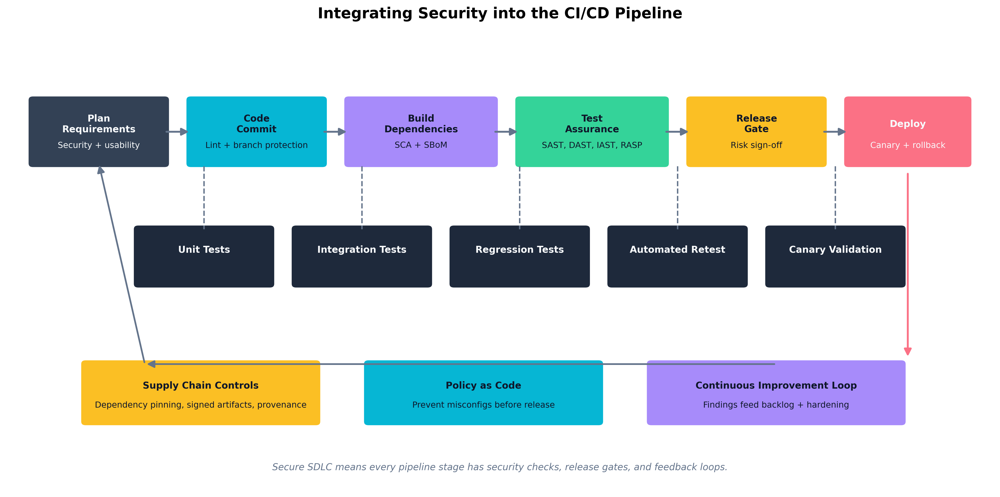
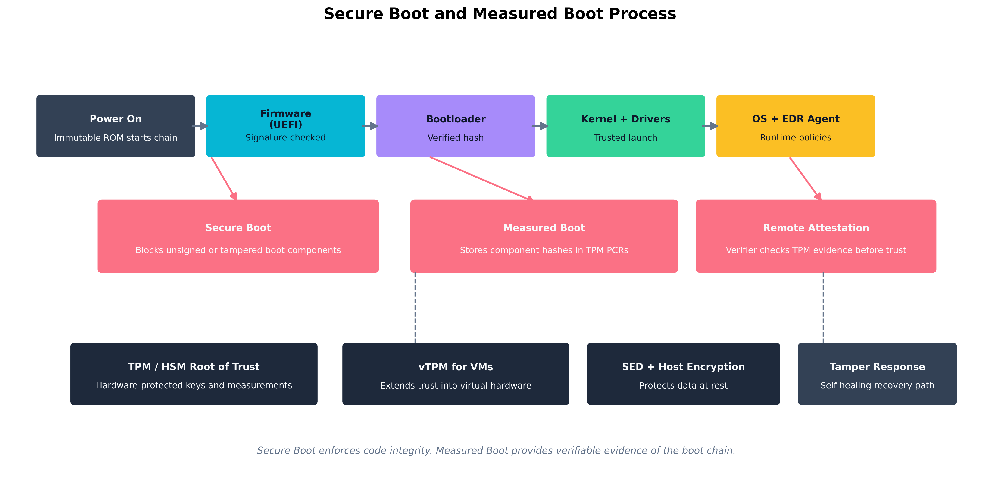

Chapter 6: Secure Systems Lifecycle and Hardware Assurance
Learning Outcomes:
- Define functional and non-functional security requirements during the early stages of the systems life cycle.
- Apply software assurance techniques, including SAST, DAST, IAST, RASP, vulnerability analysis, SCA, SBoMs, and formal methods.
- Design CI/CD pipelines with coding standards, linting, branch protection, and comprehensive testing.
- Evaluate supply chain risk management strategies for both software and hardware, including EOL planning.
- Implement hardware assurance controls, including certification and validation processes and roots of trust (TPMs, HSMs, and vTPMs).
- Assess secure boot, measured boot, virtual hardware controls, host-based encryption, and self-encrypting drives.
- Design security coprocessor and secure enclave deployments with self-healing and tamper-detection capabilities.
- Evaluate threat-actor TTPs targeting firmware, memory, buses, and electromagnetic interfaces, including shimming, USB attacks, EMI, and EMP.
Introduction
There is a useful thought experiment in software security: if you could go back and redesign your most critical application from the beginning, knowing what you know now about how attackers think, what would you do differently? Most experienced engineers give the same general answer. They would have spent more time on requirements. They would have added security reviews before code was written, not after it was shipped. They would have tracked every open-source package they pulled in. And they would never, ever have hardcoded that API key.
This chapter is about turning that hindsight into foresight. Rather than bolting security on after the fact, the competent security architect weaves it into the fabric of how software and hardware are designed, built, tested, and delivered. That process — from the first conversation about what a system should do all the way through to the hardware it runs on — is called the systems lifecycle, and securing it end to end is one of the heaviest responsibilities on the SecurityX exam.
We start at the beginning: defining what “secure” actually means before a single line of code is written. We then tour the modern toolbox for software assurance — SAST, DAST, IAST, RASP, SCA, and SBoMs — and look at how CI/CD pipelines can turn manual security reviews into automated safety nets. From there we move down the stack to hardware: the roots of trust that make a system’s security guarantees verifiable, the secure and measured boot processes that protect the early startup sequence, and the hardware-level attacks — firmware tampering, shimming, USB exploits, and electromagnetic interference — that remind us how many attack surfaces exist below the operating system.
How Do We Bake Security into the Systems Lifecycle?
A secure product is not produced by applying a security scanner to the code on Friday before a Monday release. It is produced by asking security questions at every stage of development — and by having architecture, engineering, and testing processes that operationalize those questions into automatable checks. The framework for doing this systematically is called Secure SDLC or, more broadly, security in the systems lifecycle.
Defining Security Requirements: Functional vs. Non-Functional
Before developers write code, someone has to write down what the system needs to do. Those descriptions of behavior are called requirements, and they come in two flavors that matter enormously for security.
Functional requirements describe what the system does: “Users must be able to reset their passwords via email link.” “The API must return customer order history in JSON format.” “The payment form must accept Visa, Mastercard, and American Express.” These are the requirements that product managers write and developers ship. They define visible behavior.
Non-functional requirements describe how the system behaves across a quality dimension: performance, reliability, scalability — and security. Examples include: “All passwords must be hashed using bcrypt with a cost factor of at least 12.” “The API must implement rate limiting of 100 requests per minute per authenticated user.” “Session tokens must expire after 30 minutes of inactivity.” “The system must log all failed authentication attempts to the central SIEM.”
The trap organizations fall into is treating non-functional requirements as optional enhancements to revisit after the product ships. Security non-functional requirements are promises the system makes to its users and to the organization. When they are not written down before development starts, they tend not to exist in the finished product.
Key Point Non-functional security requirements should be documented with the same rigor as functional requirements — with testable acceptance criteria. “The system must be secure” is not a requirement. “All HTTP responses must include a
Strict-Transport-Securityheader withmax-ageof at least 31536000” is a requirement that a pipeline can verify automatically.
A related tension that architects must navigate explicitly is the security versus usability trade-off. Many security controls impose friction: MFA slows down login; strict session timeouts force re-authentication during long tasks; overly aggressive input validation breaks legitimate workflows. The right balance depends on the sensitivity of the application and the realistic threat model. An internal wiki used by engineers has different requirements than an internet-facing payment portal. Architects should quantify this trade-off rather than letting developers resolve it informally in the direction of convenience.
Secure Coding Standards and Linting
Once requirements are defined, the next layer of defense is in how code is written. Coding standards are documented rules about how developers should write code in a given language and environment. They cover variable naming, error handling, input validation patterns, cryptographic algorithms, logging format, and dozens of other micro-decisions that, accumulated across a codebase, determine how likely it is to contain vulnerabilities.
Linting tools enforce standards automatically. A linter reads source code and flags violations — unused variables, missing input sanitization, hardcoded secrets, deprecated cryptographic functions — before the code ever runs. Modern linters can be configured with security-specific rules. ESLint with a security plugin will catch dangerous patterns in JavaScript. Bandit will flag common security issues in Python. Semgrep lets teams write their own custom pattern-matching rules for organization-specific anti-patterns.
The value of linting is speed. A vulnerability caught by a linter at the moment the developer types it is vastly cheaper than the same vulnerability found in a penetration test or, worse, by an attacker. Linting shifts security feedback to the left — closer to the moment of creation.
Branch Protection and the Human Gate
Even teams with excellent individual coding habits need a mechanism to prevent mistakes from reaching production. Branch protection rules on version control platforms (GitHub, GitLab, Bitbucket) enforce policies at the repository level. Common protections include:
- Require pull requests (PRs) before merging. No one
can push directly to the
mainorproductionbranch, even administrators. - Require a minimum number of reviewers. Code must be reviewed by at least one other developer before merge.
- Require status checks to pass. The CI pipeline — including build, lint, and test steps — must succeed before a PR can be merged.
- Require signed commits. Commits must be cryptographically signed with a developer’s GPG or SSH key, preventing spoofed commit authorship.
Warning Branch protection rules are enforceable at the platform level, but platform administrators can usually bypass them. At a minimum, bypass events should be logged and reviewed. In highly sensitive repositories, bypasses should require approval from a separate reviewer.
The CI/CD Pipeline as a Security Checkpoint
Continuous Integration / Continuous Deployment (CI/CD) is the practice of automatically building, testing, and deploying software every time code is merged into a shared branch. From a security perspective, the CI/CD pipeline is the most powerful systematic security enforcement tool an organization has. Every commit runs the same gauntlet of checks, every time. No step gets skipped because someone was busy.

Figure 6.1: A secure CI/CD pipeline embeds security checks at every stage — lint and commit signing on commit, SCA and SBoM generation at build time, SAST and DAST at test time — with findings feeding a continuous improvement backlog.The pipeline has five conceptual stages for our purposes:
- Plan — Security and usability requirements are captured before work begins.
- Code — Linting, code standards enforcement, and branch protection run on every commit.
- Build — Dependency resolution; software composition analysis (SCA) and SBoM generation happen here.
- Test — SAST, DAST, IAST, RASP integration; unit, integration, and regression tests run.
- Deploy — Release gates enforce a risk sign-off; canary deployments and rollback capability reduce blast radius.
At each stage, failed checks halt the pipeline and feed findings back to developers with actionable context. The goal is not a pipeline that blocks every deploy — it is a pipeline where developers receive useful feedback fast enough that they build secure habits.
Canary deployments are worth calling out specifically. Rather than deploying a new version to all users at once, a canary release sends the update to a small subset — five percent of users, say — and monitors for anomalies before rolling it out further. This is not purely a security control, but when paired with security monitoring, it limits the blast radius of a vulnerability that slipped through testing.
Regression testing verifies that a code change does not break existing functionality, including existing security controls. A regression test suite should include tests for previously discovered vulnerabilities: if a SQL injection flaw was fixed in version 2.3, there should be an automated test that verifies SQL injection at that input is still blocked in every subsequent version.
Thought Question Your pipeline runs SAST on every commit and DAST against a staging environment on every merge to
main. A developer argues that DAST is slow and should be scheduled weekly instead. What do you gain and what do you lose by accepting that trade-off? What compensating controls would you want in place if you agreed?
Quick Check 6.1
- Recall. What is the difference between a functional requirement and a non-functional security requirement?
- Discriminate. Which control flags insecure code patterns as developers write, and which control prevents direct merges without review: linting or branch protection?
- Apply. If DAST moves from every merge to a weekly schedule, what do you lose, and what compensating controls would you want in place?
Answers — Quick Check 6.1
- Functional requirements describe what the system does; non-functional security requirements describe how securely or reliably it must behave.
- Linting flags insecure code patterns; branch protection enforces PRs, reviews, and passing checks before merge.
- You lose fast detection of runtime and integration flaws on each merge. You would want stronger upstream controls such as SAST or IAST, solid regression tests, and safer release gates like canary deployment and rollback.
What Tools Are Available for Software Assurance?
Software assurance is the discipline of verifying that code does what it is supposed to do and does not do what it is not supposed to do — with specific emphasis on security properties. The toolbox is large, and different tools measure different things at different points in the lifecycle.
SAST: Finding Problems Without Running the Code
Static Application Security Testing (SAST) analyzes source code, bytecode, or binary without executing it. The analyzer looks for known vulnerability patterns — command injection, SQL injection, use of insecure cryptographic functions, improper error handling — by examining the code’s structure and logic.
SAST is fast (it can scan large codebases in minutes), integrates cleanly into CI pipelines, and can be run before any test environment is needed. Its weakness is false positives: patterns that look like vulnerabilities but are not, because the tool cannot fully reason about the runtime context. A SAST tool might flag a string formatted into a query as a SQL injection risk even if the code is calling a parameterized query library under the hood. Developers who see too many false positives start ignoring the tool, which is arguably worse than not having it.
Common SAST tools include Checkmarx, Veracode, SonarQube, Semgrep, CodeQL (used in GitHub Advanced Security), and language-specific tools like Bandit for Python and SpotBugs for Java.
Example
What a SAST finding looks like in practice
Running Bandit against a Python microservice returns the following:
Issue: [B105:hardcoded_password_string] Possible hardcoded password: 'admin1234' Severity: Medium Confidence: Medium Location: app/config.py, line 14The offending line is
DB_PASSWORD = "admin1234". The fix is to read the value from the environment at runtime instead:DB_PASSWORD = os.environ.get("DB_PASSWORD")A secrets manager injects the real value at deploy time — it never touches source code. The key lesson: SAST caught this before the commit was merged. The same credential baked into a container image pushed to a public registry would typically be scraped and used within minutes.
DAST: Finding Problems By Running the Code
Dynamic Application Security Testing (DAST) tests a running application by simulating attacks against it — submitting malicious inputs, probing for injection vulnerabilities, checking for misconfigurations in HTTP headers, testing authentication and authorization logic. DAST tools do not have access to source code; they see the application the way an attacker would.
DAST finds vulnerabilities that SAST cannot, particularly those that arise from the interaction between components at runtime: misconfigurations in the web server, authentication bypasses that are only apparent when the whole system is assembled, session management flaws that exist in the protocol flow rather than in code logic. The trade-off is that DAST requires a live environment, is slower than SAST, and can miss code paths that are not exercised by its attacks.
The most widely used open-source DAST tool is OWASP ZAP (Zed Attack Proxy). Commercial alternatives include Burp Suite Enterprise, Rapid7 InsightAppSec, and Invicti (formerly Netsparker).
IAST: Instrumentation from the Inside
Interactive Application Security Testing (IAST) is an approach that instruments the application itself — typically by embedding an agent into the running application during testing. The IAST agent observes the application’s internal behavior as it is exercised by functional tests, integration tests, or manual QA. It can see which code paths were executed and flag vulnerabilities with full context: the specific function, the tainted data flow, and the actual code line.
IAST avoids the false-positive problem of SAST (it has runtime context) and avoids the coverage problem of DAST (it see code paths that DAST probes may not reach). The trade-off is that IAST requires a compatible runtime environment, introduces performance overhead, and may add licensing cost. IAST is particularly valuable in organizations where SAST is drowning teams in false positives and DAST misses complex multi-step vulnerabilities.
RASP: Security that Runs in Production
Runtime Application Self-Protection (RASP) embeds a security agent inside the application itself — not just during testing, but in production. The RASP agent inspects function calls, data flows, and requests at runtime and can block attacks as they happen. If a piece of user input is about to be sent to a SQL query in a way the agent identifies as an injection attack, RASP can terminate the request before any harm is done, log the event, and alert the security team.
RASP is powerful because it operates close to the vulnerable code and catches exploits that bypass perimeter defenses. However, it adds latency, introduces a new software component that must be maintained and trusted, and can produce false positives that break legitimate application behavior. RASP is best understood as a defense-in-depth layer added after SAST and DAST have reduced the vulnerability count, not as a substitute for fixing the underlying code.
| Tool Type | When It Runs | Sees Source Code? | Main Strength | Main Weakness |
|---|---|---|---|---|
| SAST | Pre-commit / CI | Yes | Fast, catches patterns early | False positives, no runtime context |
| DAST | Against live app | No | Finds runtime/integration flaws | Slower, needs live environment |
| IAST | During testing | Agent observes | Low false positives, full context | Runtime overhead, coverage depends on tests |
| RASP | Production runtime | No (runtime) | Blocks live attacks | Latency, maintenance, false-positive risk |
Vulnerability Analysis and Formal Methods
Vulnerability analysis is the broader discipline of identifying, classifying, and prioritizing known vulnerabilities in software components — whether discovered by the tools above, reported by vendors, or found in public databases like the National Vulnerability Database (NVD) and CVE list. Effective vulnerability analysis pairs automated scanning with human judgment: not every critical-severity CVE is exploitable in your specific deployment context, and triage matters as much as discovery.
Formal methods are mathematical techniques for specifying and verifying software behavior. A formal specification defines, precisely and unambiguously, what a system is supposed to do. A formal verification process then proves — using mathematical reasoning — that the implementation satisfies the specification. Formal methods are not practical for general enterprise applications, but they have been used to verify security-critical software such as cryptographic libraries, operating system kernels, hypervisors, and avionics control systems. The TLS 1.3 protocol was designed with formal security proofs. The seL4 microkernel includes a machine-checked proof of functional correctness. For the exam, understand that formal methods exist, what they offer, and why they are used primarily in high-assurance contexts.
Software Composition Analysis and Software Bills of Materials
Modern applications are predominantly composed of open-source dependencies. A typical enterprise web application may contain hundreds of third-party packages, each of which may in turn depend on dozens of others. Those packages were written by developers you will never meet, maintained on a volunteer basis, and audited by nobody. When a vulnerability is discovered in one of them, the consequences can be severe.
Software Composition Analysis (SCA) tools inventory the open-source and third-party components in an application’s dependency tree, check them against known vulnerability databases, identify license compliance issues, and flag dependencies that have reached end-of-life. SCA runs at build time in the CI pipeline and produces a continuous view of the application’s dependency risk. Common SCA tools include Snyk, FOSSA, Black Duck, and the GitHub Dependabot feature.
A Software Bill of Materials (SBoM) is a formal, machine-readable inventory of every component in a software product — every package, version, license, and origin. SBoMs are to software what ingredient labels are to food: a transparent record of what went into the product, enabling consumers to assess their exposure when a new vulnerability is disclosed. The U.S. Executive Order on Cybersecurity (2021) mandated SBoM production for software sold to the federal government, and the practice is spreading rapidly as a supply chain security requirement.
Key Point An SBoM is not just a compliance artifact — it is an operational security tool. When Log4Shell was disclosed in December 2021, organizations with current SBoMs were able to identify affected systems in hours. Organizations without them spent weeks manually auditing codebases, or did not find all their exposures at all.
Case Study Log4Shell and the Importance of SBoMs
On December 9, 2021, a researcher published details of a critical zero-day vulnerability in Log4j, a widely used Java logging library maintained by the Apache Software Foundation. The vulnerability — CVE-2021-44228, quickly nicknamed Log4Shell — allowed an attacker to achieve remote code execution on servers running vulnerable versions of Log4j, simply by causing the server to log a crafted string. Log4j was embedded across an enormous share of enterprise Java applications, commercial products, cloud services, and industrial control systems (Cybersecurity and Infrastructure Security Agency 2022).
The severity was assigned a CVSS score of 10.0 — the maximum. Security teams worldwide faced an immediate and urgent question: do we have Log4j in our systems? (Cybersecurity and Infrastructure Security Agency 2022)
For organizations with mature SBoMs and SCA tooling, the answer came quickly. A query against the SBoM inventory returned a list of systems running affected versions. Teams could prioritize based on internet exposure and criticality, patch or mitigate in order of risk, and confirm their coverage within days.
For organizations without that visibility, the next several weeks were a manual scramble. Teams searched through package management files, container images, JAR files embedded inside JAR files, and vendor support portals. Many did not finish the audit before attackers began mass exploitation. Some organizations discovered months later — through incident response — that they had missed a vulnerable instance that an attacker had already compromised.
The incident made the case for SBoMs in a way that years of advocacy had not. It demonstrated concretely that supply chain visibility is not a theoretical benefit: it is the difference between a two-day incident and a three-month crisis. It also made it much easier for security leaders and policymakers to argue that SBoMs should become a normal part of software procurement.
How Do We Manage the Supply Chain and Plan for End-of-Life?
A modern organization does not build most of its software from scratch. It buys commercial products, uses open-source libraries, runs cloud services, and purchases hardware from a global supply chain. The security of its environment is therefore only partly determined by its own engineering practices — it also depends on the security practices of every vendor and manufacturer it relies upon.
Software Supply Chain Risk Management
Software supply chain risk management covers the risks that arise from software components originating outside the organization: open-source packages, commercial off-the-shelf (COTS) software, SDKs and APIs, and software developed by contractors. The SolarWinds attack (discussed in Chapter 5) was a supply chain attack: attackers compromised SolarWinds’ build environment and inserted malicious code into a software update that thousands of customers then applied automatically, trusting that updates from a vendor they had vetted were legitimate.
Key practices for software supply chain security include:
- Dependency pinning: Rather than always pulling the latest version of a package, pin to a specific known-good version and update deliberately.
- Signed artifacts: Require that software packages and container images be cryptographically signed by their publishers. Do not install unsigned packages in production.
- Provenance tracking: Record where code came from, who built it, and on which infrastructure — ideally using standards like SLSA (Supply-chain Levels for Software Artifacts).
- Vendor security assessments: Evaluate the security practices of commercial software vendors as part of procurement. Does the vendor maintain a vulnerability disclosure program? Do they provide SBoMs? How quickly do they patch critical vulnerabilities?
These practices overlap heavily with NIST’s Secure Software Development Framework, which treats provenance, dependency control, artifact integrity, and supplier review as core software security activities rather than optional extras (Souppaya et al. 2022).
Hardware Supply Chain Risk Management
Hardware is also a supply chain risk. Motherboards, network cards, storage controllers, and processors are designed by one company, manufactured by another, assembled by a third, and distributed through a fourth. At each step, there is a theoretical opportunity for a malicious actor to introduce alterations — counterfeit components, modified firmware, unauthorized hardware implants.
Hardware supply chain assurance includes:
- Purchasing from authorized channels and verifying hardware against vendor hashes or physical security seals.
- Firmware verification at deployment: comparing firmware versions against vendor-supplied golden hashes, and implementing secure boot to prevent unauthorized firmware payloads.
- Tamper-evident packaging and physical inspection logs.
- Anti-counterfeiting standards, such as the U.S. Department of Defense’s Trusted Foundry program for semiconductor sourcing.
The threat is not hypothetical. Numerous documented cases involve counterfeit network equipment installed in government and enterprise environments, and NIST’s platform firmware resiliency guidance treats unauthorized firmware modification as a realistic attack class that organizations should be prepared to detect and recover from (Regenscheid 2018).
End-of-Life (EOL) Planning
Every piece of technology has an end-of-life (EOL) date — the point at which its vendor stops providing security updates. After EOL, vulnerabilities discovered in the product will not receive patches. Running EOL software is therefore an acceptance of accumulating, unmitigable risk.
EOL planning starts at procurement, not at the EOL date. During procurement, architects should document:
- When the product reaches EOL.
- What the upgrade or replacement path is.
- What compensating controls will be applied if EOL is reached before replacement.
EOL challenges are most acute for embedded systems, industrial control systems, and hardware with long deployment lifecycles — a server BIOS receiving patches until 2026, but the hardware it runs on is expected to stay in production until 2032. When EOL cannot be avoided, compensating controls typically include network segmentation (isolating EOL systems from general-purpose networks), enhanced monitoring (watching for exploitation indicators), and restricted connectivity (minimizing inbound paths).
Warning Running a web-facing application on an EOL operating system because “the upgrade was too complicated” is a risk acceptance decision with measurable probability and potentially catastrophic impact. Organizations that make this choice should do so explicitly, quantify the risk, document it with senior executive sign-off, and revisit it at regular intervals — not let it quietly persist indefinitely.
Quick Check 6.2
- Recall. What do SCA tools provide, and what does an SBoM provide?
- Discriminate. A tool that attacks a running application from the outside is DAST or SAST?
- Apply. A web-facing system has reached EOL but cannot be replaced immediately. What compensating controls does the chapter recommend?
Answers — Quick Check 6.2
- SCA inventories third-party dependencies and known vulnerabilities; an SBoM records the full machine-readable ingredient list of the software.
- DAST. It probes a live application the way an attacker would.
- Segment it, watch it closely, and shrink connectivity. The chapter recommends network isolation, enhanced monitoring, and restricted inbound paths.
How Do We Establish Hardware Roots of Trust?
We have been discussing software-level assurance. Now we move down the stack to the hardware and firmware that software runs on. If an attacker can compromise the hardware or firmware before the operating system loads, all the application-level security controls in the world are built on a compromised foundation. Hardware roots of trust are the mechanisms that give a system a trustworthy, verifiable starting point — a foundation that cannot be tampered with without detection.
Certification and Validation Processes
Hardware security is partly enforced before a device ever ships, through certification and validation programs that verify that a hardware product meets defined security requirements. For the U.S. federal market, FIPS 140-3 defines requirements for cryptographic modules. Products that pass FIPS 140-3 testing are placed on a validated module list and may be used in federal systems requiring certified cryptography (National Institute of Standards and Technology 2019). Similar programs exist internationally.
The Common Criteria framework (ISO 15408) provides a broader evaluation process for IT security products, enabling buyers to assess products against standardized Protection Profiles or custom Security Targets with independently audited results.
For the exam, understand these programs exist, what problem they solve (verifiable third-party assurance of hardware security properties), and their limitation (certification is point-in-time, not continuous — post-sale firmware updates may change the security posture certified at evaluation).
TPMs, HSMs, and vTPMs
Three hardware components appear repeatedly in discussions of roots of trust:
A Trusted Platform Module (TPM) is a dedicated security chip specified by the Trusted Computing Group (TCG), found on most modern enterprise laptops, desktops, and servers. The TPM provides the kind of measured-boot and protected-key foundation that modern firmware-resiliency guidance assumes for trustworthy platform startup (Regenscheid 2018). The TPM provides:
- Hardware-protected key storage: Private keys generated inside the TPM cannot be extracted by software, even by the operating system or a kernel-level rootkit.
- Platform Configuration Registers (PCRs): Registers that accumulate cryptographic measurements of system components during boot. Each measurement is a hash of a firmware or software component, extended into a chain.
- Attestation: The TPM can produce a signed report (a “quote”) of its PCR values, allowing a remote verifier to confirm that the platform booted through the expected sequence of components.
- Sealing and unsealing data: Encryption keys can be “sealed” to specific PCR values, meaning the data can only be decrypted if the system is in a specific, measured state. BitLocker uses this to unlock the disk only when the TPM confirms the boot chain is intact.
A Hardware Security Module (HSM) is a more capable, physically hardened device designed for high-throughput cryptographic operations in enterprise or cloud environments. HSMs store master keys, perform signing and encryption operations, and physically resist tampering — attempting to open the device physically triggers key zeroization. HSMs are used to protect PKI root CAs, payment processing keys, code-signing keys, and cloud key management service backends.
Key Point The critical architectural distinction between a TPM and an HSM is scale and purpose. TPMs are embedded per-device for integrity measurement and local key protection. HSMs are shared infrastructure devices for high-value, high-throughput cryptographic operations and the protection of master secrets.
A Virtual Trusted Platform Module (vTPM) extends the TPM concept into virtualized environments. When a virtual machine needs Secure Boot, disk encryption keying, or attestation, the hypervisor provides a vTPM that functions as the guest’s TPM. The vTPM’s secrets are ultimately protected by the hypervisor and, ideally, by the physical TPM of the host. This means VM images can include TPM-dependent protections without requiring physical hardware changes.
| Component | Physical? | Primary Use | Trust Anchor |
|---|---|---|---|
| TPM | Yes (chip on motherboard) | Per-device integrity measurement, key storage | Immutable keys burned at manufacture |
| HSM | Yes (dedicated appliance or PCIe card) | Enterprise crypto operations, master key protection | Tamper-evident hardware |
| vTPM | No (hypervisor software) | TPM functionality for VMs | Hypervisor + physical TPM on host |
Example
BitLocker sealed to TPM PCR values
A corporate laptop’s BitLocker configuration seals the disk encryption key to PCR values 0, 2, 4, 7, and 11 — registers that measure UEFI firmware, the boot loader, boot configuration, Secure Boot state, and the early Windows boot manager respectively. At each startup the TPM re-measures those components and extends their hashes into the PCRs.
If everything is unchanged — the same firmware, the same Secure Boot keys, the same boot configuration — the PCRs match the sealed policy. The TPM releases the Volume Master Key and the drive unlocks transparently. The user sees nothing unusual.
If an attacker removes the drive and puts it in a different machine, or tampers with the bootloader between reboots, the measured PCR values will not match what the key was sealed to. The TPM refuses to release the key. The drive contents remain encrypted and unreadable, even with the physical disk in hand.
This is “sealing to platform state” in concrete terms: the decryption key is not just protected by a password — it is tied to cryptographic evidence that the system is in a specific, expected configuration.
Virtual Hardware and Host-Based Encryption
Virtual hardware security is the practice of enforcing security properties at the hypervisor layer that individual VMs cannot override. Hypervisors such as VMware ESXi and Microsoft Hyper-V provide VMs with virtualized representations of hardware — virtual NICs, virtual disks, virtual CPUs — but critically, the hypervisor controls what those virtual devices can do.
Security-relevant virtual hardware controls include:
- VM isolation: Memory pages allocated to one VM are not accessible to other VMs, enforced by the hypervisor’s memory management, not by the guest OS.
- Secure VM networking: Virtual switches can enforce MAC address pinning, VLAN tagging, and promiscuous mode restrictions between VMs.
- Encrypted VM storage: Hypervisors can encrypt virtual disk volumes using keys managed by an external HSM, so access to the storage backing file does not expose the VM’s data.
Host-based encryption refers to encryption enforced at the host OS or hypervisor layer for all data written to storage. Microsoft BitLocker and Linux dm-crypt are common implementations. The key advantage is that encryption is applied before data reaches the physical disk, regardless of the storage medium used.
Self-Encrypting Drives (SEDs) implement encryption in the drive’s firmware and controller electronics. The drive itself handles all encryption and decryption without CPU overhead. SEDs implement the TCG Opal standard, and management is done through software that unlocks the drive during boot using a pre-boot authentication step. The primary security benefit of SEDs is cryptographic erasure: instead of overwriting all data to retire a drive securely, an administrator can simply delete the internal encryption key — making all stored data permanently and instantly unreadable in milliseconds.
Warning SEDs rely entirely on the drive’s own firmware for their security guarantees. A drive with buggy firmware may not actually encrypt data at all, or may use weak keys. Published research has documented multiple SED implementations where the drive reported encryption was active, but data was recoverable without the password. Organizations relying on SEDs for classified or regulated data should also seek independent verification of the SED’s security claims.
Security Coprocessors and Secure Enclaves
Modern CPUs include dedicated security features beyond the standard TPM:
CPU security extensions such as Intel Software Guard Extensions (Intel SGX) and AMD Secure Encrypted Virtualization (AMD SEV) allow code to execute in a secure enclave — an isolated region of memory that the CPU itself protects. Even the operating system, hypervisor, and other applications cannot read or tamper with memory inside an enclave. The code and data within the enclave are encrypted in memory and only decrypted by the CPU’s hardware memory encryption engine as they are used.
Secure enclaves are used for workloads that require strong confidentiality guarantees even from the platform operator — for example, processing cryptographic keys in a cloud environment where you do not fully trust the cloud provider’s administrative access, or executing sensitive AI model inference without exposing model weights to the host server.
Example Victor Frankenstein and the IoT Key Injection Problem at Geneva Labs
Victor Frankenstein was three weeks into his new role as Bio-Tech Security Engineer at Geneva Labs when the firmware audit landed on his desk. Geneva manufactured implantable biosensors for clinical trials — small devices with wireless telemetry that transmitted patient vital signs to hospital monitoring systems. Each device needed a unique cryptographic identity so that its data could be trusted and the device could receive authenticated firmware updates. The problem Victor inherited was that the current manufacturing process stored these identity keys in a standard microcontroller’s flash memory, in cleartext, generated by a script running on a shared manufacturing laptop.
To a non-engineer, this might sound like a minor technical debt. To Victor, looking at recent research on medical device attacks, it was a catastrophic exposure. Anyone who could read the flash — a vendor technician, a compromised laptop on the manufacturing network, or a patient who disassembled a returned device — could extract the key and either impersonate the device or forge trusted firmware updates.
Victor’s fix had three components. First, Geneva’s new manufacturing process sends each device through a secure key injection station that communicates with the corporate HSM. The HSM generates a unique keypair per device, stores the private key internally, and programs only a certified attestation chain into the device. The device’s private key is generated on a secure element embedded in the biosensor SoC itself — it never leaves the chip. Second, firmware updates must be signed by a key stored exclusively in the HSM; unsigned updates are rejected by the bootloader. Third, the manufacturing laptop was retired and replaced by a dedicated provisioning appliance with physical tamper detection.
The lesson Victor framed in his post-implementation report was simple: if you generate a secret outside the device and then inject it, you have already exposed it. Secrets should be generated where they will live — inside the hardware that protects them.
Quick Check 6.3
- Recall. What is the main architectural difference between a TPM and an HSM?
- Discriminate. A virtual machine needs TPM-style attestation and disk-key protection. Which control from the chapter fits that use case?
- Apply. What principle did Victor Frankenstein’s redesign enforce when he changed how device keys were created?
Answers — Quick Check 6.3
- A TPM is a per-device root of trust for measured boot and local key protection; an HSM is shared tamper-resistant infrastructure for high-value enterprise cryptography.
- A vTPM. It gives the guest TPM-like functions through the hypervisor.
- Generate secrets where they will live. Victor moved key generation into protected hardware instead of creating keys outside the device and injecting them later.
How Do We Secure the Boot Process and Defend Against Hardware Attacks?
The boot sequence is the earliest and most trusted moment in a system’s lifecycle. Malware that can install itself at the firmware or bootloader level runs before the operating system, before endpoint protection, before logging, and before any of the security controls we might be counting on. This section covers how modern hardware defends the boot sequence and how attackers try to subvert it.
Secure Boot
Secure Boot is a UEFI firmware feature that ensures that the system will only execute boot software signed with a key in an approved database. When Secure Boot is enabled:
- The UEFI firmware holds a database of authorized signing certificates (the “db”) and revoked certificates and hashes (the “dbx”).
- Before handing off to the bootloader, the firmware verifies the bootloader’s signature against the db.
- The bootloader then verifies the kernel’s signature before executing it.
- The kernel verifies its drivers and modules.
At each stage, a verification failure halts the boot and displays a warning, rather than loading an unverified component. An attacker who replaces the bootloader with a malicious version — a bootkit — will see the unsigned bootloader rejected by the firmware. An attacker who tries to add a malicious driver will see unsigned module loading blocked (assuming the OS is configured to require it).
Secure Boot is most effective when:
- The firmware’s Platform Key (PK) and Key Exchange Keys (KEKs) are enrolled from the hardware vendor and not replaceable without physical access.
- The
dbxis kept up to date with revoked components, particularly revoked bootloaders discovered to have vulnerabilities (the Secure Boot bypass landscape is actively managed through dbx updates).

Figure 6.2: The full boot integrity chain — Secure Boot validates signatures at each stage; Measured Boot records hashes into the TPM; Remote Attestation allows a verifier to confirm the boot chain without physical access.Measured Boot
Measured Boot complements Secure Boot but serves a different purpose. Where Secure Boot blocks unauthorized components, Measured Boot records everything that ran during startup. At each stage of the boot:
- The UEFI firmware computes a cryptographic hash of the component it is about to execute.
- That hash is extended into a TPM Platform Configuration Register (PCR) — meaning the new PCR value is the hash of (old PCR value + new measurement). This creates an irreversible, cumulative record.
- By the time the OS is running, the PCR values represent a tamper-evident log of everything that ran from power-on.
A remote verifier can request the TPM to produce a signed quote of its PCR values and compare those against known-good measurements. If a component was replaced or tampered with, the PCR chain will not match. This process — remote attestation — is the basis for cloud services that verify VM trustworthiness before granting access to sensitive data.
Measured Boot does not prevent an attack by itself. It provides evidence about what happened during boot, enabling detection and response. Combined with attestation-gated access controls — “this workload may not access the signing key if its PCR values indicate the kernel has been modified” — it becomes preventive.
Firmware Attacks: BIOS/UEFI Tampering
The firmware layer — BIOS (Basic Input/Output System) in older systems, UEFI (Unified Extensible Firmware Interface) in modern ones — initializes hardware before any operating system loads. Firmware-level malware is extremely difficult to detect and persist through OS reinstalls and even drive replacements. State-sponsored attacker groups have demonstrated UEFI implants that remain active across multiple OS reinstallations.
Defense strategies include:
- Secure Boot enforcement to block unsigned firmware payloads.
- Firmware signing and secure update processes enforced by the vendor — UEFI updates should only be applied from signed capsule files delivered through verified channels.
- Physical access controls — firmware update capabilities are often protected by physical presence requirements or administrative passwords, both of which only work if physical access is controlled.
- Platform firmware protection mechanisms like Intel Boot Guard, which locks the initial boot firmware to an immutable hash stored in fuses at manufacture time, preventing any firmware modification from being executed on that platform.
Shimming, USB-Based Attacks, and Evil Maid
Shimming in the hardware context refers to interposing a thin layer between hardware components to intercept and manipulate communications. Hardware shims — physical devices placed between a keyboard and a laptop, for example, or inline on a SATA cable — can log keystrokes, intercept disk writes, or inject commands. In the bootloader context, vendor-signed shims (such as the UEFI shim used by many Linux distributions) are a legitimate architectural component; malicious shims are unauthorized intermediate software or hardware inserted to bypass trust chains.
USB-based attacks exploit the broad functionality and default trust that operating systems extend to USB devices. Relevant attack forms include:
- Rubber Ducky / HID attacks: A USB device that presents itself as a keyboard and silently types a malicious payload — potentially installing malware, exfiltrating data, or adding a backdoor — faster than a human can see.
- BadUSB: Malicious firmware loaded into a USB device’s microcontroller that allows the device to impersonate any USB class — keyboard, network adapter, audio device — depending on what gives the attacker the most useful access vector.
- USB power attacks: Malicious charging cables and stations that exploit USB data lines during charging to attack the connected device. The “juice jacking” threat is real, though historically more theoretical in enterprises than in public charging contexts.
Controls for USB attacks include:
- Disabling unused USB ports in firmware or OS policy.
- Implementing USB device whitelisting through endpoint management tools (only pre-approved device identifiers may be recognized by the OS).
- Using USB data blockers or charge-only cables for charging from untrusted sources.
- Physical port locks for high-security workstations.
The evil maid attack is a scenario worth knowing by name: an attacker with brief physical access to an unattended, powered-off device — perhaps in a hotel room — boots from a USB device they control, manipulates the system (installing a bootkit, reading the disk, or implanting hardware), and leaves before the owner returns. Measured Boot and Secure Boot are specifically designed to detect and prevent the software component of evil maid attacks; physical tamper evidence (chassis intrusion detection switches, seals) addresses the hardware component.
Memory Exploitation Techniques
Attackers who cannot modify firmware or the boot chain may target memory directly once the system is running. Relevant techniques include:
DMA attacks: Direct Memory Access (DMA) allows certain peripheral devices (Thunderbolt, FireWire, some PCIe devices) to read and write system memory without CPU involvement. An attacker with physical access and a DMA-capable device can read encryption keys and credentials directly from RAM. IOMMU (Input/Output Memory Management Unit) controls counter this by restricting which physical memory regions each DMA-capable device may access.
Cold boot attacks: DRAM retains data for seconds to minutes after power is removed, especially when cooled. An attacker can physically remove RAM from a running or recently powered-off machine, cool the chips (extending retention time), and dump their contents to find encryption keys or credentials. Full-disk encryption keys held only in RAM are vulnerable. TPM-based key sealing mitigates this because the decryption key is never fully resident in accessible RAM.
Rowhammer: A hardware vulnerability in certain DRAM implementations where repeatedly accessing specific memory rows can cause bit flips in adjacent rows — enabling an attacker to corrupt memory they do not have permission to access. This has been used to escalate from user to kernel privilege.
Electromagnetic Interface Attacks: EMI and EMP
Physical attacks do not require touching a device. Electromagnetic Interference (EMI) and Electromagnetic Pulse (EMP) represent threat vectors that operate at a distance.
EMI is the unintentional (or intentional) emission of electromagnetic energy that disrupts electronic devices. Targeted EMI attacks (sometimes called IEMI — Intentional Electromagnetic Interference) can cause bit flips in memory, reset microcontrollers, or corrupt data in transit on buses. In high-security installations, Faraday cages, TEMPEST-certified equipment, and electromagnetic shielding mitigate EMI threats.
EMP is a burst of electromagnetic energy intense enough to damage or destroy electronic circuits. A nuclear detonation at high altitude produces an EMP affecting a wide geographic area. Localized EMP devices (non-nuclear, sometimes called “EMP guns”) can destroy consumer electronics at close range. While large-scale EMP events are primarily a continuity-of-operations concern rather than an information security attack, the threat informs the hardening of national infrastructure and critical systems. Military and government systems use EMP-hardened hardware and Faraday shielding as part of their protection.
TEMPEST is a government program (and a set of standards, also known as NSA Suite B emissions security standards) that addresses the risk of information leakage through unintentional electromagnetic emissions from computing equipment — screens, keyboards, processors, and cables all emit radio-frequency signals that can, with the right equipment, be intercepted and decoded at a distance. TEMPEST-certified equipment is shielded to reduce these emissions below detectable levels.
Key Point For the exam, understand what EMI, EMP, and TEMPEST represent and the types of controls used to address them. You will not be expected to design a Faraday cage, but you should recognize that electromagnetic phenomena represent a real hardware-level attack surface, particularly for facilities housing classified or highly sensitive systems.
Tamper Detection, Self-Healing Hardware, and Countermeasures
The final layer of hardware assurance is what happens when an attack occurs.
Tamper detection refers to physical and logical mechanisms that alert the system when an unauthorized access attempt is underway. Examples include:
- Chassis intrusion detection switches: A sensor on the computer case that logs a flag in the BIOS event log (and optionally sends an alert) when the case is opened.
- Tamper-evident seals and labels: Physical labels or epoxy on screws and connectors that are visibly damaged if removed.
- Cryptographic attestation chains: The TPM’s measured boot provides a logical tamper signal: if the PCR values are wrong at boot, something in the boot path changed.
- HSM zeroization: A hardware security module physically monitors for tamper attempts — temperature extremes, voltage anomalies, physical penetration — and destroys its stored keys automatically.
Self-healing hardware is a design pattern where the hardware itself can detect corruption and recover. Intel’s Boot Guard with Authenticated Code Module execution provides verified firmware recovery. Modern server BMCs (Baseboard Management Controllers) can restore BIOS firmware from a protected golden copy if corruption is detected. Some enterprise-grade routers implement a dual-firmware architecture where a verified backup image is maintained independently of the primary image, allowing automatic rollback on failure.
Thought Question A laptop recovered from an attacker is delivered to your forensics team. The BIOS event log shows a chassis intrusion event at 2:47 AM, followed by a Secure Boot failure for the bootloader at 2:48 AM. What do these two log entries together suggest about what the attacker attempted? What would you expect the system’s state to be if the Secure Boot enforcement was properly configured?
Quick Check 6.4
- Recall. What does Secure Boot do, and what does Measured Boot do?
- Discriminate. A Thunderbolt peripheral reading RAM directly is what kind of attack: DMA or cold boot?
- Apply. A recovered laptop shows a chassis intrusion event followed by a Secure Boot failure for the bootloader. What does that sequence suggest, and what should the system have done if controls worked?
Answers — Quick Check 6.4
- Secure Boot blocks untrusted boot components; Measured Boot records what ran into TPM PCRs for later attestation.
- DMA. The attacker is using a peripheral to access live memory directly; cold boot is the cooled-RAM retention attack.
- It suggests physical tampering plus an attempted bootloader or bootkit modification. A correctly configured system should refuse to boot the altered component and keep TPM-sealed data inaccessible.
Chapter Review and Conclusion
This chapter followed the security-minded architect through the full systems lifecycle — from the earliest conversation about requirements all the way down to hardware that resists electromagnetic attack. The throughline is a consistent philosophy: do not wait until the end to add security. Embed it at every stage, automate what you can, and ensure that the hardware the software runs on provides a trustworthy foundation.
We opened with requirements: the distinction between functional requirements (what the system does) and non-functional requirements (how secure, how available, how reliable it must be). Security non-functional requirements need testable acceptance criteria so that pipelines can verify them automatically. The security-usability trade-off must be considered explicitly, not resolved ad hoc.
We explored the software assurance toolbox. SAST finds vulnerability patterns in code without executing it. DAST attacks a live application the way an attacker would. IAST instruments the running application during testing for high-fidelity, low-false-positive analysis. RASP embeds security enforcement in the production runtime. SCA inventories open-source dependencies and matches them against known-vulnerable-version databases. SBoMs make that inventory formal and machine-readable — a capability that proved its value during Log4Shell when organizations with SBoMs could respond in hours while others spent weeks.
We covered supply chain risk management: the reality that most of what we build uses components we did not write, manufactured on hardware we did not design, shipped through a chain we cannot fully audit. Dependency pinning, artifact signing, vendor security assessments, and hardware procurement practices all reduce this risk. EOL planning ensures that risk accumulation from unsupported software is a managed decision rather than a surprise.
We then descended to hardware. TPMs provide per-device integrity measurement and sealed key storage. HSMs protect organization-level cryptographic secrets at scale. vTPMs extend these protections into virtualized environments. Secure enclaves let sensitive workloads execute with confidentiality guarantees even against privileged system software.
We traced the boot chain from power-on through Secure Boot (which blocks unauthorized components) and Measured Boot (which records everything into TPM PCRs for later attestation). We examined the attacks below the OS: BIOS/UEFI firmware implants, hardware shimming, USB-based HID and BadUSB attacks, DMA-based memory attacks, cold boot attacks that extract keys from cooled RAM, electromagnetic interference, and EMP. Each has defenses — but only against adversaries less determined than the controls you deploy.
Finally, we looked at detection and self-healing: tamper detection switches, HSM zeroization, Secure Boot with remote attestation, and dual-image firmware recovery architectures that give the system a way to verify itself and restore a trusted state when something goes wrong.
Key Terms Review
- Functional Requirements: Descriptions of what a system does — its features and behaviors.
- Non-Functional Requirements: Descriptions of quality attributes: security, performance, reliability.
- SAST (Static Application Security Testing): Analysis of source code for vulnerability patterns without execution.
- DAST (Dynamic Application Security Testing): Testing a running application by simulating attacks.
- IAST (Interactive Application Security Testing): Agent-based testing that observes applications during execution.
- RASP (Runtime Application Self-Protection): Security agents embedded in production applications to detect and block attacks in real time.
- SCA (Software Composition Analysis): Automated inventory and vulnerability assessment of open-source dependencies.
- SBoM (Software Bill of Materials): A machine-readable inventory of every component in a software product.
- CI/CD (Continuous Integration / Continuous Deployment): Automated pipelines that build, test, and deploy software on every code change.
- Branch Protection: Repository policies that enforce rules (reviews, status checks, signed commits) before merges.
- Canary Deployment: A release strategy that delivers changes to a small subset of users before a full rollout.
- Regression Testing: Testing to confirm that new code changes do not break previously verified functionality.
- Formal Methods: Mathematical specification and verification techniques for proving software correctness.
- Supply Chain Risk: Security risk arising from software or hardware components originating outside the organization.
- EOL (End-of-Life): The date after which a vendor ceases to provide security updates for a product.
- TPM (Trusted Platform Module): A dedicated security chip providing hardware-protected key storage, PCR measurements, and attestation.
- HSM (Hardware Security Module): A tamper-resistant appliance for enterprise cryptographic operations and master key protection.
- vTPM (Virtual Trusted Platform Module): A hypervisor-provided software implementation of a TPM for virtual machines.
- Secure Enclave: A CPU-protected memory region that is isolated even from the operating system and hypervisor.
- SED (Self-Encrypting Drive): A storage device that implements encryption in its own firmware and controller.
- Secure Boot: A UEFI feature that verifies the cryptographic signature of each boot component before executing it.
- Measured Boot: A process that records cryptographic hashes of each boot component into TPM PCRs for remote attestation.
- Remote Attestation: A process by which a TPM quote of PCR values is verified by a remote party to confirm platform integrity.
- IOMMU (Input/Output Memory Management Unit): Hardware that restricts which memory regions DMA-capable devices may access, preventing DMA attacks.
- Shimming: Interposing a hardware or software layer between components to intercept or manipulate communications.
- BadUSB: A firmware attack on USB devices allowing them to impersonate other USB device classes.
- EMI (Electromagnetic Interference): Unintentional or intentional electromagnetic emissions that disrupt electronic devices.
- EMP (Electromagnetic Pulse): An intense burst of electromagnetic energy capable of damaging or destroying electronics.
- TEMPEST: Government standards for shielding equipment against information leakage via unintentional electromagnetic emissions.
- Tamper Detection: Physical and logical mechanisms that detect unauthorized access to hardware.
- Self-Healing Hardware: Architectures that detect firmware or configuration corruption and automatically restore a verified trusted state.
Practice-Based Question
Apply The Chapter
Victor Frankenstein Audits an IoT Insulin Pump
Work this PBQ after the review to apply the chapter’s concepts in scenario form.
Synthesis Activities
These are open-ended activities meant to extend the chapter beyond what a search engine — or a chatbot — can answer on its own. Each works individually or in a group; the goal is the conversation, the debate, or the artifact, not a paper about it. Activities marked with No one to interview? or Studying alone? sidebars include AI-based alternatives — used here as a sparring partner, role-player, or facilitator, not as a source.
Conduct an Interview (1 hour)
Talk to someone who works at the lifecycle, supply chain, or hardware security layer — an application security engineer, build/release engineer, third-party risk officer, firmware engineer, hardware security researcher, or product security lead. A few questions worth asking, in roughly this order:
- Walk me through what a release looks like in your environment, from a developer’s commit to a signed artifact in production. Where are the human checkpoints, and where are they purely automated?
- What does your software bill of materials actually contain, who updates it, and who reads it?
- When did a third-party dependency or vendor most recently make your week worse, and what did the response look like?
- What hardware-trust assumption (TPM, secure boot, signed firmware) does your environment depend on most heavily, and what would happen if that assumption were violated?
- What’s one thing the secure-SDLC literature gets wrong about how this work actually gets done?
Listen for the gap between the lifecycle as drawn — requirements, design, code, test, deploy, monitor — and the lifecycle as lived, where the boundaries blur and the supply chain extends much further than the org chart admits.
No one to interview? Run the conversation with a chatbot in role. A prompt that works: “You are the head of product security at a mid-sized SaaS company. You own the SDLC, the third-party risk program, and the supply chain security program. You have lived through one near-miss with a malicious dependency. I’m interviewing you for a class. Answer in character. When I ask something a real product security lead would not actually know — especially about hardware-level details outside their direct work — say so.” The rehearsal exposes which of your questions confuse SDLC scope with supply chain scope with hardware scope.
Hold a Debate (1 hour)
Pick the position you find least sympathetic and argue it as well as you can:
- Software bills of materials should be legally mandated for every commercial software product, with regulatory penalties for inaccuracy. Without that mandate, supply chain risk is invisible to the buyers who actually carry the downstream impact.
- Mandated SBOMs are compliance theater. They produce documents that nobody reads, do not capture the runtime behavior that actually matters, and shift attention away from the harder problems of build provenance and reproducible builds.
- The whole framing is wrong. Both sides treat the supply chain as a documentation problem, when it is really an economics problem: open-source maintainers are unpaid, commercial vendors are under-incentivized to invest in security, and no amount of documentation fixes the underlying asymmetry between who creates risk and who bears it.
The exercise only works if you defend the position you don’t already hold. In class, assign positions and go live; the surprise of having to think on your feet is the point.
Studying alone? Sketch your argument, then ask a chatbot to attack it from the opposite position. A prompt that produces real sparring: “Take the opposite position from the argument below and attack it as aggressively as a senior product security leader who deeply disagrees. Cite real supply chain incidents — SolarWinds, Log4Shell, XZ, MOVEit, Codecov — and real outcomes of SBOM regulation efforts. Don’t be polite. After each of my replies, escalate.” The goal isn’t to beat the model. It’s to find out which parts of your case fold under pressure.
Track a Current Debate (20 min)
Find a supply chain, SDLC, or hardware security event from the last six months. Good hunting grounds: CISA’s Secure by Design pledge and progress reports, Executive Order 14028 implementation milestones, advisories on malicious package campaigns in npm/PyPI/RubyGems, OpenSSF Scorecard releases, recent post-mortems on dependency compromises, advisories on TPM/UEFI/firmware vulnerabilities, and chip-level disclosures (Intel, AMD, ARM). Be ready to explain to a classmate, in two minutes, what happened, where in the lifecycle the failure occurred (development, build, distribution, runtime, hardware), and what defenders are doing differently as a result. Bring two primary sources you’d point them to if they wanted to read further.
Lab Artifact: Read a Real SBOM (20 min)
A software bill of materials is meant to be machine-readable, but the value of being able to read one as a human is that you see what a vendor or open-source project actually shipped — including transitive dependencies you would not have guessed.
- Go to the OWASP CycloneDX example BOMs repository at github.com/CycloneDX/bom-examples.
Browse into the
SBOMdirectory and pick one example project to open. - Open the CycloneDX
bom.json(orbom.xml) file in the browser. Scan the structure: metadata, components, dependencies, and any external references. - Identify, in your own words: the application that the SBOM is for, the direct dependencies it declares (top-level components), at least two transitive dependencies (components depended on by other components, not by the app itself), and the version pinning approach.
- Pick one component you have never heard of. Search the public web for what it does and where it comes from. Did the SBOM tell you everything you needed to assess that component, or did you have to go looking?
- Then answer: if a critical CVE were disclosed in that one component tomorrow, what would the SBOM let you do that you could not do without it? What is the SBOM still not telling you that you would need to know to make a confident response decision?
Safety: Read SBOM files. Do not download, install, or execute any of the components they list — an SBOM is documentation, not a package archive.
Walk a Tabletop (2+ hours)
Pick one scenario and walk through it phase by phase, naming what you would do, what evidence you would collect, who you would call, and what would have to be true in advance for the response to actually work. The point of a tabletop is to find what is missing — the SBOM that doesn’t exist, the build provenance you cannot verify, the firmware update channel you cannot trust.
- A widely used open-source package you depend on transitively releases a new version. Within hours, security researchers publish that the new version contains an obfuscated backdoor inserted by a maintainer who has been quietly contributing for two years. Your last production build pulled the affected version. Your SBOM tells you which services include it; your build system does not yet have provenance attestations.
- A vendor pushes a firmware update to a fleet of network appliances at your perimeter. Within 24 hours, those appliances begin behaving anomalously — establishing outbound connections to addresses neither the vendor nor your team can identify. The vendor’s status page is silent. The appliances are too critical to power off.
- A CI/CD platform you use announces that an attacker has compromised the platform’s signing infrastructure for an unknown period covering at least the last 60 days. Every artifact your team built and signed through that platform during that window is potentially tampered with.
Walk: preparation (what should already be true), detection and analysis, containment, eradication and recovery, post-incident activity. At each phase, identify the lifecycle artifact (SBOM, build provenance, attestation, signing key, change record) you would need — and write down what is missing.
No group to run the tabletop? Ask a chatbot to facilitate. A prompt that works: “You are facilitating a tabletop exercise focused on a supply chain incident. I am the incident commander. Walk me through the scenario below one phase at a time. After my decisions in each phase, inject one realistic complication a real incident would throw at me — a vendor going silent, an SBOM revealing additional affected services, evidence contradicting the original attribution. Don’t let me skip the supply chain steps that real responders forget.” The model is bad at being a responder. It is unusually good at being a facilitator who keeps surfacing the supply chain artifacts you forgot to look at.